Chapter 10 分類木とアンサンブル学習
本章の内容は, 授業の R 演習スクリプト R_DT_Ensemble_dist.R に対応する.
前半では, 個人ローンの信用データを使って分類木を構築し, 分類モデルの評価方法 (混同行列, 適合率・再現率, ROC 曲線と AUC) を確認する. 後半では, アンサンブル学習を扱う.
個々には必ずしも精度の高くない予測モデル (“弱い学習器”) の結果を集約することで, より精度の高い予測モデル (“強い学習器”) を構築する手法をアンサンブル学習と呼ぶ.
これは, “集団の叡智”を計算機内に実装したもので,
- 分類問題 → 個々の回答の多数決
- 回帰問題 → 個々の予測値の平均値
によって, 個々の予測値を集約する. 近年の計算機パワーの向上と伴に, 研究・実用化とも急拡大している.
主な技法として, バギング (bagging), ブースティング (boosting), スタッキング (stacking) がある.
本章では, 決定木を“弱い学習器”とするアンサンブル学習のアルゴリズムとして, 機械学習分野で多用されている, ランダムフォレスト (random forest) と 勾配ブースティング木 (gradient boosting/boosted tree) を取り上げる.
以下では, ランダムフォレスト, 勾配ブースティング木ともに分類問題のみを扱うが, これらはいずれも回帰問題にも対応することができる.
10.1 決定木 (分類木): パッケージ tree
前章では, パッケージrpartの関数rpart()を使用したが,
ここでは, まず別のパッケージtreeの関数tree()を使用する.
データ: 個人ローン信用データ (再掲)
データセットは, german creditデータを使用する.
目的変数としては, 個人の2水準 {bad, good} の信用状態を示す
変数であるCustomerを選択し, これを予測するモデルを
決定木により構築する.
german_credit_modified.csv: 1,000件, 説明変数20個
- 目的変数 Customer: good (優良顧客) / bad (不良顧客)
データ入手先: https://archive.ics.uci.edu/dataset/144/statlog+german+credit+data
※ 授業用に一部修正credit_df <- read.csv("class/german_credit_modified.csv", header = T, skip = 3, quote = "",
stringsAsFactors = T)
# 目的変数(Customer)はfactor型にしないとエラー発生: stringsAsFactors =
# Tを指定のこと
str(credit_df)
#> 'data.frame': 1000 obs. of 21 variables:
#> $ StatusAccount : Factor w/ 4 levels "ge_200DM","lt_0DM",..: 2 3 4 2 2 4 4 3 4 3 ...
#> $ DurationMonth : int 6 48 12 42 24 36 24 36 12 30 ...
#> $ CreditHistory : Factor w/ 5 levels "A","B","C","D",..: 5 3 5 3 4 3 3 3 3 5 ...
#> $ Purpose : Factor w/ 6 levels "business","car",..: 6 6 3 6 2 3 6 2 6 2 ...
#> $ CreditAmount : int 1169 5951 2096 7882 4870 9055 2835 6948 3059 5234 ...
#> $ SavingsAccount : Factor w/ 4 levels "ge_1000DM","lt_1000DM",..: NA 3 3 3 3 NA 2 3 1 3 ...
#> $ EmploymentSince : Factor w/ 5 levels "ge_7yrs","lt_1yr",..: 1 3 4 4 3 3 1 3 4 5 ...
#> $ InstallmentRate : int 4 2 2 2 3 2 3 2 2 4 ...
#> $ StatusAndSex : Factor w/ 4 levels "F_divorced","M_divorced",..: 4 1 4 4 4 4 4 4 2 3 ...
#> $ Guarantors : Factor w/ 3 levels "co-applicant",..: 3 3 3 2 3 3 3 3 3 3 ...
#> $ ResidenceSince : int 4 2 3 4 4 4 4 2 4 2 ...
#> $ Property : Factor w/ 3 levels "car_etc","life_insurance",..: 3 3 3 2 NA NA 2 1 3 1 ...
#> $ Age : int 67 22 49 45 53 35 53 35 61 28 ...
#> $ InstallmentPlans: Factor w/ 3 levels "bank","none",..: 2 2 2 2 2 2 2 2 2 2 ...
#> $ Housing : Factor w/ 3 levels "free","own","rent": 2 2 2 1 1 1 2 3 2 2 ...
#> $ NCredits : int 2 1 1 1 2 1 1 1 1 2 ...
#> $ Job : Factor w/ 4 levels "management","skilled",..: 2 2 4 2 2 4 2 1 4 1 ...
#> $ NPeopleMain : int 1 1 2 2 2 2 1 1 1 1 ...
#> $ Phone : Factor w/ 2 levels "no","yes": 2 1 1 1 1 2 1 2 1 1 ...
#> $ ForeignWorker : Factor w/ 2 levels "no","yes": 2 2 2 2 2 2 2 2 2 2 ...
#> $ Customer : Factor w/ 2 levels "bad","good": 2 1 2 2 1 2 2 2 2 1 ...欠損値の有無を確認し, 必要な処理を行う. 今回の分析では, 欠損値は補間せずにレコードごと除去することにする.
library(Amelia)
missmap(credit_df, col = c("yellow", "black"), y.at = 1, y.labels = "", legend = TRUE)
# 欠損値処理 → 今回は除去
ok <- complete.cases(credit_df) # 欠損値を持つ項目のないcase (データ点)はT, さもなくばFを返す
credit_df_noNA <- credit_df[ok, ]
dim(credit_df_noNA)
#> [1] 695 21なお, 以下で使用するtree(), rpart(), randomForest(), gbm()に対しては不要であるが, 関数によっては (例えば, 正則化回帰のglmnet()), データフレーム内にある factor型の質的変数をそのままでは受け付けずに,
一旦ダミー変数に変換する必要のあるものもある.
# model.matrix() は, 質的変数 → ダミー変数化
x <- model.matrix(Customer ~ ., credit_df_noNA)[, -1] # factorのdummy変数化 + (intercept)を除去
y <- credit_df_noNA$Customer- 学習データ/ テストデータの分割 (validation set approach)
欠損値を除いた 695 件のうち, 500件を学習データ, 残りをテストデータとする.
- 決定木の構築
パッケージtreeを読み込み, 関数tree()を用いて分類木を構築する.
tree()は乱数を使わないので, set.seed()は不要である.
library(tree) # tree, cv.tree, prune.tree
fit_tree <- tree(Customer ~ ., data = credit_df_noNA, subset = train)
# split = 'gini' も指定可 (デフォルトは 'deviance')
summary(fit_tree)
#>
#> Classification tree:
#> tree(formula = Customer ~ ., data = credit_df_noNA, subset = train)
#> Variables actually used in tree construction:
#> [1] "StatusAccount" "DurationMonth" "Guarantors" "Property"
#> [5] "Age" "SavingsAccount" "CreditHistory" "EmploymentSince"
#> [9] "Purpose" "InstallmentPlans" "InstallmentRate"
#> Number of terminal nodes: 14
#> Residual mean deviance: 0.9171 = 445.7 / 486
#> Misclassification error rate: 0.228 = 114 / 500
fit_tree
#> node), split, n, deviance, yval, (yprob)
#> * denotes terminal node
#>
#> 1) root 500 619.100 good ( 0.31000 0.69000 )
#> 2) StatusAccount: lt_0DM,lt_200DM 272 373.300 good ( 0.44118 0.55882 )
#> 4) DurationMonth < 15.5 120 146.600 good ( 0.30000 0.70000 )
#> 8) Guarantors: co-applicant,none 104 134.200 good ( 0.34615 0.65385 )
#> 16) Property: car_etc,life_insurance 61 84.150 good ( 0.45902 0.54098 ) *
#> 17) Property: real_estate 43 41.320 good ( 0.18605 0.81395 ) *
#> 9) Guarantors: guarantor 16 0.000 good ( 0.00000 1.00000 ) *
#> 5) DurationMonth > 15.5 152 209.000 bad ( 0.55263 0.44737 )
#> 10) Age < 62 147 200.800 bad ( 0.57143 0.42857 )
#> 20) SavingsAccount: lt_1000DM,lt_100DM 123 163.600 bad ( 0.61789 0.38211 ) *
#> 21) SavingsAccount: ge_1000DM,lt_500DM 24 30.550 good ( 0.33333 0.66667 )
#> 42) CreditHistory: A,C 15 20.730 bad ( 0.53333 0.46667 )
#> 84) Age < 27 6 0.000 bad ( 1.00000 0.00000 ) *
#> 85) Age > 27 9 9.535 good ( 0.22222 0.77778 ) *
#> 43) CreditHistory: B,D,E 9 0.000 good ( 0.00000 1.00000 ) *
#> 11) Age > 62 5 0.000 good ( 0.00000 1.00000 ) *
#> 3) StatusAccount: ge_200DM,none 228 195.500 good ( 0.15351 0.84649 )
#> 6) EmploymentSince: lt_1yr,unemployed 48 61.110 good ( 0.33333 0.66667 )
#> 12) Purpose: business,repairs 8 6.028 bad ( 0.87500 0.12500 ) *
#> 13) Purpose: car,education,TV_etc 40 42.650 good ( 0.22500 0.77500 ) *
#> 7) EmploymentSince: ge_7yrs,lt_4yrs,lt_7yrs 180 121.400 good ( 0.10556 0.89444 )
#> 14) InstallmentPlans: bank,store 33 38.670 good ( 0.27273 0.72727 ) *
#> 15) InstallmentPlans: none 147 73.060 good ( 0.06803 0.93197 )
#> 30) CreditHistory: C,D 79 56.030 good ( 0.11392 0.88608 )
#> 60) InstallmentRate < 3.5 49 16.710 good ( 0.04082 0.95918 ) *
#> 61) InstallmentRate > 3.5 30 32.600 good ( 0.23333 0.76667 ) *
#> 31) CreditHistory: A,B,E 68 10.420 good ( 0.01471 0.98529 ) *
# 木の表示
plot(fit_tree)
text(fit_tree, pretty = 0)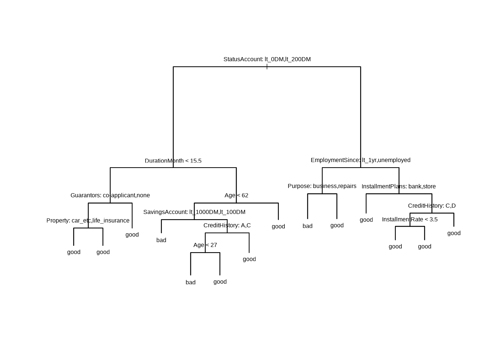
- 木の成長のコントロール (停止条件の設定)
tree()によって生成する木の大きさは, tree.control()によってコントロールすることが出来る.
指定した条件に引っ掛かりそれ以上分割するノードが
なくなった時点でアルゴリズムが終了する.
tree.control(): 木の成長をコントロールするパラメータ (特に, mincutとminsize) の設定
- usage: tree.control(nobs, mincut = 5, minsize = 10, mindev = 0.01)
- 主なパラメータ:
- nobs 学習セットの観測数
- mincut 分割後の子ノードに含まれる観測数の最小値 (デフォルト=5)
- minsize 分割を行うノードに含まれる観測数の最小値 (デフォルト=10). 値が大きいと, ツリーは浅くなる
- mindev ノード内逸脱度 (within-node deviance) が, ルートノードの逸脱度に対して少なくともこの割合以上である場合にのみ, そのノードが分割される. 例. mindev=0.01の場合, ノードが分割されるためにはそのノードの逸脱度がルートノードの逸脱度の1%以上である必要がある. これにより, すでに十分小さい逸脱度を持つノードが無駄に分割されるのを防ぐ.# 例: 停止条件を緩めて, より大きな木を成長させる
control_params <- tree.control(nobs = length(train), mincut = 3, minsize = 6, mindev = 0.005)
fit_tree2 <- tree(Customer ~ ., data = credit_df_noNA, subset = train, control = control_params)
summary(fit_tree2)- 木の剪定
関数cv.tree()を使えば,
交差検証 (CV) による最適な木の大きさを見つけることができる.
# 木の剪定がパフォーマンスを改善するか? 交差検証により木 (の複雑度パラメータ)
# を選択する (cv.treeから, prune.treeを呼び出して実行)
set.seed(1)
cvfit_tree <- cv.tree(fit_tree) # デフォルト: method = 'deviance', 10-folds CV
plot(cvfit_tree$size, cvfit_tree$dev, type = "b")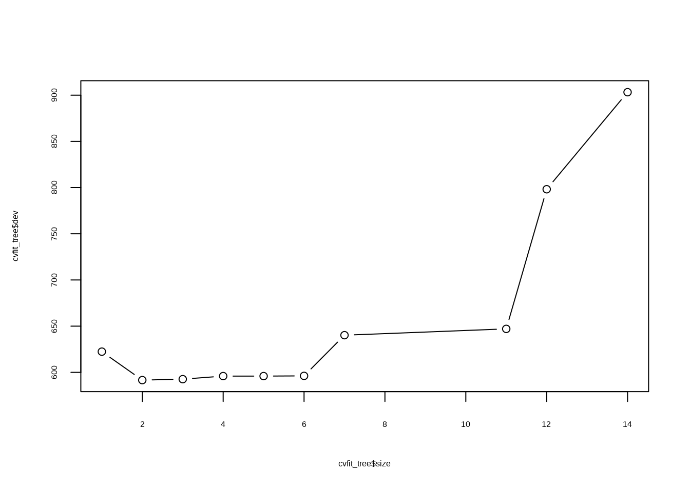
set.seed(1)
cvfit_tree2 <- cv.tree(fit_tree, method = "misclass") # 誤分類数で評価
cvfit_tree2$size[which.min(cvfit_tree2$dev)]
#> [1] 5デフォルトの method = "deviance" では末端ノード数 2,
method = "misclass" では 5 が最良となった (いずれも単純過ぎる?).
交差検証の分割は乱数で決まるため, 乱数のシードを変えると結果も変わりうる.
関数prune.tree()を使い, 手動で木を剪定することもできる.
prune.tree()の主なパラメータ:
- k cost-complexity パラメータ
- best (希望する) 木のサイズ (末端ノード数). (kを指定する代わりに指定可)
- method ノードの非均一性の指標. デフォルト="deviance". 回帰木は"deviance"のみ. 分類木では"misclass" (誤分類の数) も選択可能# prune.tree関数による剪定 prn_tree <- prune.tree(fit_tree, k = 11)\t\t\t# k:
# cost-complexity parameter, または, bestの指定
prn_tree <- prune.tree(fit_tree, method = "misclass", best = 8) # best: 末端ノード数
summary(prn_tree)
#>
#> Classification tree:
#> snip.tree(tree = fit_tree, nodes = c(4L, 7L))
#> Variables actually used in tree construction:
#> [1] "StatusAccount" "DurationMonth" "Age" "SavingsAccount"
#> [5] "CreditHistory" "EmploymentSince" "Purpose"
#> Number of terminal nodes: 9
#> Residual mean deviance: 0.9976 = 489.8 / 491
#> Misclassification error rate: 0.228 = 114 / 500
plot(prn_tree) # 'deviance'/'misclass'で結果が異なる. cvとも異なる
text(prn_tree, pretty = 0)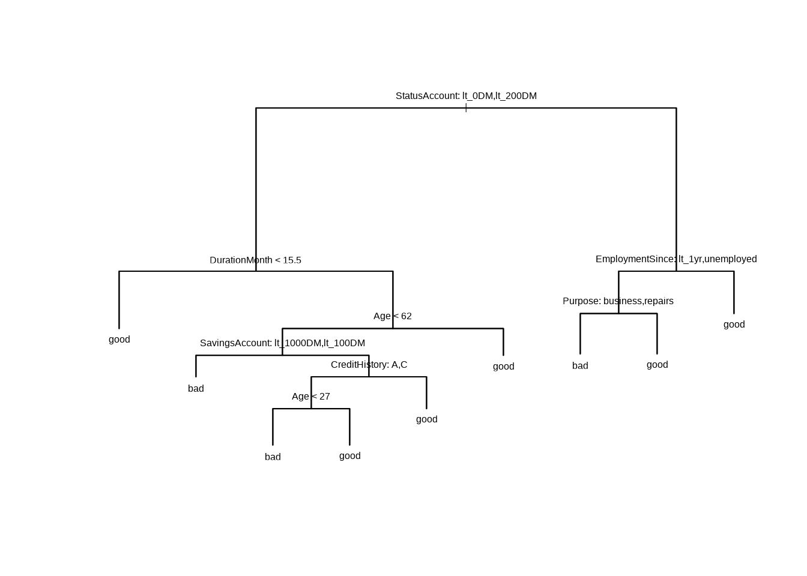
- テスト用データセットを用いて外挿予測
ここでは, 適合された木 (剪定なし) を用いて, テスト用データに対する予測を行う.
デフォルトではpredict()は各クラスの確率を出力するため,
ここでは引数type = "class"を指定する.
# yhat_tree <- predict(fit_tree, newdata = credit_df_noNA[-train, ])\t\t# -->
# 確率
yhat_tree <- predict(fit_tree, newdata = credit_df_noNA[-train, ], type = "class") # --> good/bad- 混同行列によるパフォーマンス評価
混同行列を作成し, パッケージcaretに含まれる関数confusionMatrix()を使用して,
各種パフォーマンス指標を計算する. この関数の出力オブジェクトから,
accuracyや, F1 (F値, F尺度) 等の特定の指標の値を取り出すことが出来る.
(tbl_tree <- table(yhat_tree, credit_df_noNA$Customer[-train]))
#>
#> yhat_tree bad good
#> bad 24 22
#> good 29 120
library(caret) # confusionMatrix
confusionMatrix(tbl_tree, mode = "prec_recall")
#> Confusion Matrix and Statistics
#>
#>
#> yhat_tree bad good
#> bad 24 22
#> good 29 120
#>
#> Accuracy : 0.7385
#> 95% CI : (0.6709, 0.7986)
#> No Information Rate : 0.7282
#> P-Value [Acc > NIR] : 0.4091
#>
#> Kappa : 0.3108
#>
#> Mcnemar's Test P-Value : 0.4008
#>
#> Precision : 0.5217
#> Recall : 0.4528
#> F1 : 0.4848
#> Prevalence : 0.2718
#> Detection Rate : 0.1231
#> Detection Prevalence : 0.2359
#> Balanced Accuracy : 0.6490
#>
#> 'Positive' Class : bad
#>
(confusionMatrix(tbl_tree)$overall["Accuracy"])
#> Accuracy
#> 0.7384615
(confusionMatrix(tbl_tree, mode = "prec_recall")$byClass["F1"])
#> F1
#> 0.4848485→ 木の大きさを変えることで, 改善の余地がある.
自主課題 ハイパーパラメータを変えて, パフォーマンスを比較してみよう.
10.2 分類モデルの評価指標
上の confusionMatrix() の出力に現れる指標を整理しておく.
2値分類では, 注目する側のクラスを「陽性 (positive)」と呼ぶ.
信用リスクの文脈では, 不良顧客 (bad) を見つけることが目的なので, bad を陽性とするのが自然である.
confusionMatrix() は表の1番目の水準を陽性とする (出力末尾の 'Positive' Class で確認できる. 引数 positive で指定することも可能).
今回は, 水準がアルファベット順に bad, good と並ぶため, bad が陽性になっている.
| 実績: 陽性 (bad) | 実績: 陰性 (good) | |
|---|---|---|
| 予測: 陽性 (bad) | 真陽性 TP | 偽陽性 FP |
| 予測: 陰性 (good) | 偽陰性 FN | 真陰性 TN |
- 正解率 (accuracy) = (TP + TN) / 全件数
- 適合率 (precision) = TP / (TP + FP): 陽性と予測したうち, 実際に陽性だった割合
- 再現率 (recall), 感度 (sensitivity) = TP / (TP + FN): 実際の陽性のうち, 陽性と予測できた割合
- 特異度 (specificity) = TN / (TN + FP): 実際の陰性のうち, 陰性と予測できた割合
- F1 = 適合率と再現率の調和平均 = 2 × precision × recall / (precision + recall)
このデータでは good が約7割を占めるため, 全員を good と予測するだけでも正解率は約7割になる (No Information Rate).
クラスの比率に偏りがある場合, 正解率だけでなく, 陽性 (bad) の再現率や適合率も合わせて見る必要がある.
上の指標は, 確率を「閾値 (例えば 0.5) より大きければ陽性」とクラスに変換した後の結果に基づく. 閾値を動かしたときの真陽性率 (感度) と偽陽性率 (1 − 特異度) の関係をプロットしたものが ROC 曲線であり, その下側の面積が AUC (0.5 で予測力なし, 1 で完全な分類) である. ROC 曲線と AUC は, 閾値の選び方に依存しない分類性能の指標として, 以下のランダムフォレスト, 勾配ブースティングの節で計算する.
10.3 決定木 (分類木): パッケージ rpart + rpart.plot
前章で使用したrpart()でも, 同じデータで分類木を構築してみる.
rpart()は, 木を成長させる際に交差検証の結果 (CP表) も自動で計算するので,
複雑度パラメータ cp による剪定が容易である.
また, パッケージrpart.plotのrpart.plot()で, 見やすい木を描くことができる.
library(rpart)
library(rpart.plot)
set.seed(1) # CP表の xerror は交差検証 (乱数で分割) で計算されるため, シードを固定しておく
fit_rp <- rpart(Customer ~ ., data = credit_df_noNA, subset = train, method = "class")
printcp(fit_rp) # cp ごとの CV 誤差 (xerror)
#>
#> Classification tree:
#> rpart(formula = Customer ~ ., data = credit_df_noNA, subset = train,
#> method = "class")
#>
#> Variables actually used in tree construction:
#> [1] CreditAmount CreditHistory DurationMonth EmploymentSince
#> [5] Job Property Purpose ResidenceSince
#> [9] SavingsAccount StatusAccount
#>
#> Root node error: 155/500 = 0.31
#>
#> n= 500
#>
#> CP nsplit rel error xerror xstd
#> 1 0.051613 0 1.00000 1.00000 0.066720
#> 2 0.025806 3 0.83871 1.01935 0.067069
#> 3 0.022581 7 0.73548 1.00000 0.066720
#> 4 0.019355 9 0.69032 0.98710 0.066480
#> 5 0.010000 15 0.57419 0.92903 0.065327
plotcp(fit_rp)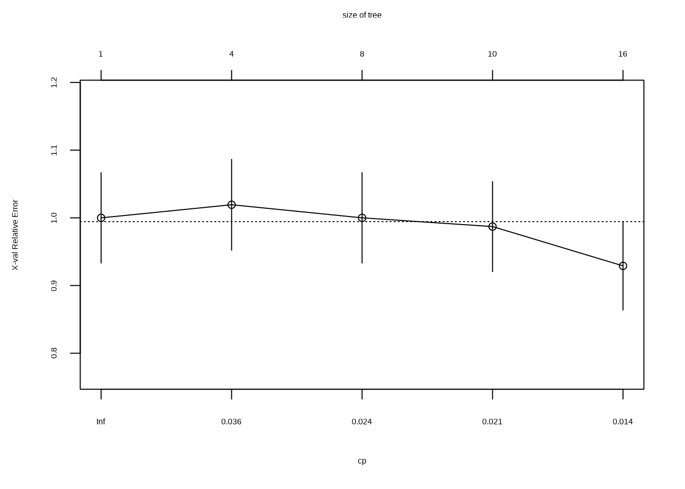

CV 誤差 (xerror) が最小となる cp で剪定する.
cp_best <- fit_rp$cptable[which.min(fit_rp$cptable[, "xerror"]), "CP"]
cp_best
#> [1] 0.01
prn_rp <- prune(fit_rp, cp = cp_best)
rpart.plot(prn_rp, type = 4, extra = 104)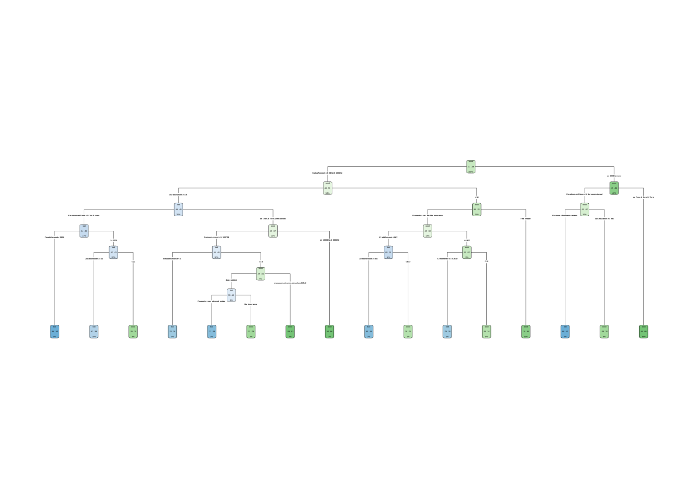
yhat_rp <- predict(prn_rp, newdata = credit_df_noNA[-train, ], type = "class")
table(予測 = yhat_rp, 実績 = credit_df_noNA$Customer[-train])
#> 実績
#> 予測 bad good
#> bad 29 28
#> good 24 114上の CP表を見ると, 木の大きさを変えても CV 誤差 (xerror) はほとんど変わらず, その差は CV 誤差の標準誤差 (xstd) の範囲内に収まっている.
このように CV 誤差が平坦な場合, CV 誤差が最小となる木は乱数 (交差検証の分割) 次第で大きく変わる.
実際, set.seed() の値を変えて実行すると, 分割なし (根のみ. 全員を good と予測) から, 剪定なしと同じ大きさの木まで, 選ばれる木が変わる.
「最小の CV 誤差から標準誤差1つ分以内で, 最も単純な木を選ぶ」(1-SE ルール) という選び方もある.
いずれにしても, このデータでは, 1本の決定木で bad と good を見分ける力は限られていると言える.
自主課題
tree() と rpart() で得られた木を比較してみよう. 最初の分割に使われている変数は同じか?
10.4 ランダムフォレスト分類木
パッケージrandomForestの関数randomForest()を使用する.
randomForest():
重要なパラメータ
- mtry: 各分割においてランダムに抽出される変数の数 (デフォルト: 分類はsqrt(p), 回帰はp/3)
- nodesize: 末端ノードの最小サイズ (大 → 小さな木)
- maxnodes: 末端ノードの最大個数
- ntree: 生成する木の数 (各レコードが複数回学習に使われるように, 小さくし過ぎない)- ランダムフォレストの実行
library(randomForest)
set.seed(1)
fit_rf <- randomForest(Customer ~ ., data = credit_df_noNA, subset = train, mtry = 6,
importance = TRUE)
fit_rf
#>
#> Call:
#> randomForest(formula = Customer ~ ., data = credit_df_noNA, mtry = 6, importance = TRUE, subset = train)
#> Type of random forest: classification
#> Number of trees: 500
#> No. of variables tried at each split: 6
#>
#> OOB estimate of error rate: 26.6%
#> Confusion matrix:
#> bad good class.error
#> bad 57 98 0.6322581
#> good 35 310 0.1014493mtry を説明変数の数 p (ここでは20) とすると, 各分割で全変数を候補とすることになり, ランダムフォレストではなくバギング (bagging) になる.
出力の OOB estimate of error rate は, 各木の学習に使われなかったデータ (OOB: out-of-bag) で計算した誤分類率であり, テストデータを使わずに予測誤差を見積もることができる.
- テスト用データを用いて外挿予測
混同行列を作成し, accuracyや, F1 の数値を取り出す.
(tbl_rf <- table(yhat_rf, credit_df_noNA$Customer[-train]))
#>
#> yhat_rf bad good
#> bad 23 14
#> good 30 128
(confusionMatrix(tbl_rf)$overall["Accuracy"])
#> Accuracy
#> 0.774359
(confusionMatrix(tbl_rf, mode = "prec_recall")$byClass["F1"])
#> F1
#> 0.5111111→ パラメータ・チューニング(mtry, nodesize/maxnodes等)により, 改善の余地有り
自主課題 ハイパーパラメータを変えて, パフォーマンスを比較してみよう.
- 各変数の重要度
importance(fit_rf)
#> bad good MeanDecreaseAccuracy MeanDecreaseGini
#> StatusAccount 18.7434927 17.9994935 24.6661297 23.2270269
#> DurationMonth 10.6378437 11.7528693 15.4603740 24.5782261
#> CreditHistory -0.8399721 5.6369963 4.1168656 11.2992018
#> Purpose 1.5884657 0.1795677 1.1861634 11.4076645
#> CreditAmount 3.4467681 9.1369447 10.0943418 30.4879993
#> SavingsAccount 5.9446303 -2.7580374 1.4665935 6.7467873
#> EmploymentSince -0.1177278 3.4559830 2.7511489 14.2515462
#> InstallmentRate -1.0577022 5.5739882 3.5781716 8.8141285
#> StatusAndSex 2.1185235 0.7037993 1.9111774 8.5827979
#> Guarantors 3.9651790 7.0427233 7.4775674 5.4775359
#> ResidenceSince 0.5886461 0.7454258 0.9575500 8.5642715
#> Property -3.7679996 9.4374726 5.5796451 7.7753570
#> Age 4.5200017 4.4779368 6.3848937 23.8100062
#> InstallmentPlans 1.5424432 1.6816496 2.2025684 5.6543835
#> Housing -0.6367334 3.2951713 2.3910415 3.7768301
#> NCredits 1.7703467 3.5559671 3.8735367 4.7124755
#> Job 1.9449787 2.0129074 2.7076356 7.1322945
#> NPeopleMain 0.3988574 -1.4670596 -0.9508590 2.5740945
#> Phone 0.6405214 0.9224854 1.1251871 2.9945208
#> ForeignWorker 1.5352560 -0.3962344 0.5488869 0.8015094
varImpPlot(fit_rf)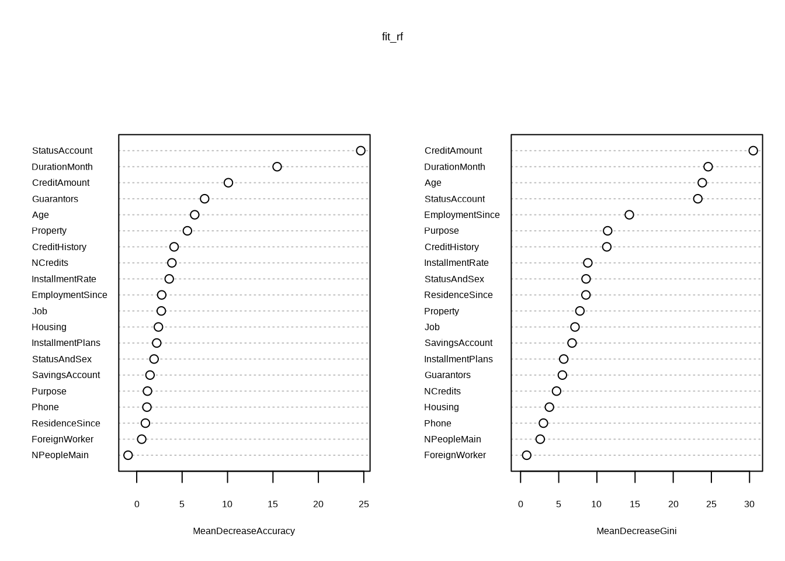
varImpPlot() の2つのパネルは, 異なる考え方に基づく重要度である.
MeanDecreaseAccuracy(左): 精度ベースの (置換) 重要度. OOB データで, ある変数の値をランダムに並べ替えたときに予測精度がどれだけ下がるかMeanDecreaseGini(右): 不純度ベースの重要度. その変数による分割で, ジニ不純度がどれだけ減少したかの合計
今回の結果では, 精度ベースでは StatusAccount, DurationMonth が上位であるのに対し, 不純度ベースでは CreditAmount が最上位となり, 精度ベースでは中位の Age も上位に来ている. 不純度に基づく重要度は, 分割点の候補が多い変数 (連続変数や水準数の多い質的変数) を過大評価しやすいことが知られている. 候補が多いほど, 偶然ノイズに合う分割点が見つかりやすいためであり, ジニ不純度に代えてエントロピーを使っても同様に生じる. CreditAmount や Age は値の種類が多い連続変数であり, 不純度ベースでの順位の高さには, この偏りの影響が含まれている可能性がある. OOB データで計算する精度ベースの重要度の方が, この偏りは小さい. ただし, 精度ベースの重要度にも弱点がある. 互いに相関の強い変数があると, 一方の値を並べ替えても他方がその情報を補ってしまうため, それぞれの重要度が小さく出る (重要度を分け合う). いずれの重要度も, 解釈する際には注意が必要である. なお, ここでの「ジニ」は不純度の指標 (ジニ不純度) であり, 所得分配の不平等度を表すジニ係数とは別物である.
- ROC曲線の可視化, およびAUC指標の計算
「陽性」= bad (不良顧客) として, bad である確率をスコアに使う.
library(ROCR) # prediction, performance
yprob_rf <- predict(fit_rf, newdata = credit_df_noNA[-train, ], type = "prob")
head(yprob_rf) # 各クラスの確率 (bad, good の2列)
#> bad good
#> 9 0.126 0.874
#> 13 0.464 0.536
#> 15 0.586 0.414
#> 16 0.554 0.446
#> 20 0.092 0.908
#> 23 0.128 0.872
pred_rf <- prediction(yprob_rf[, "bad"], credit_df_noNA$Customer[-train] == "bad")
perf_rf <- performance(pred_rf, "tpr", "fpr")
plot(perf_rf)
abline(0, 1, lty = 2) # 予測能力のない分類器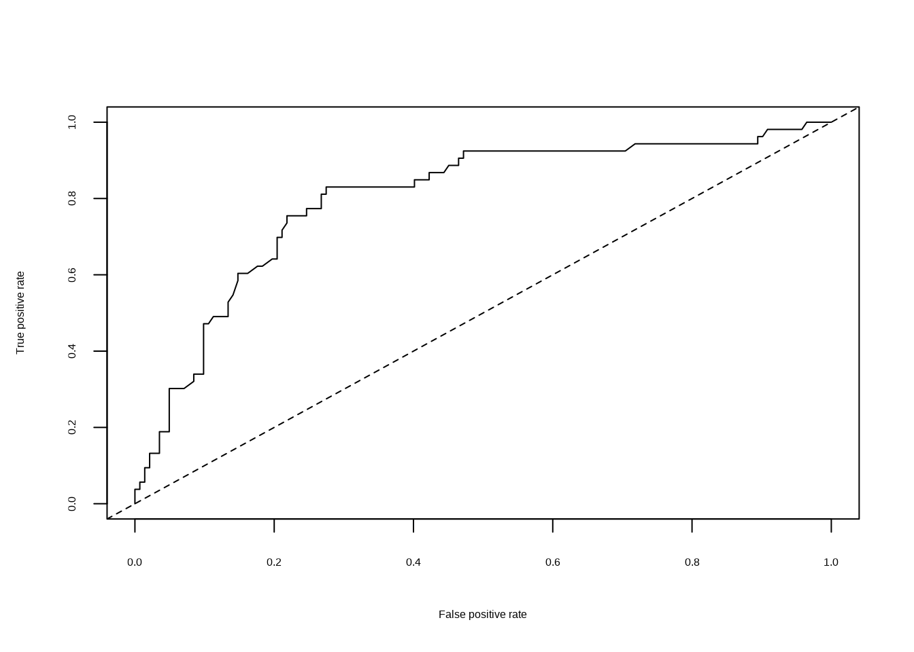
10.5 勾配ブースティング: パッケージ gbm
パッケージgbm, 関数gbm()を用いて,
勾配ブースティング木 (gradient boosting/boosted tree) を実行する.
注: `gbm()`関数は, generalized boosted regression model を適合する関数であるとマニュアルで説明されている. この関数では, 分布 (引数`distribution`) として, “gaussian”の他に, “bernoulli” (0/1), “poisson” (カウント)等をカバーすることから,「一般化線形モデル (GLM)」における”generalized”の使い方をしていると思われる.
なお, 標準的には, GBTの”G”は, 勾配 (Gradient) の”G”に対応し, “勾配ブースティング回帰 (”gradient boosting (または boosted) tree regression”) を表すと理解されるので,
注意が必要である.gbm()でdistribution = "bernoulli"を用いる場合, 事前に目的変数の値を
{0,1}に変換しておく必要がある. ここでは, 陽性である bad を 1 とする.
credit_df_01 <- credit_df_noNA
credit_df_01$Customer2 <- as.integer(credit_df_noNA$Customer == "bad") # good → 0, bad → 1
credit_df_01$Customer <- NULL
table(credit_df_01$Customer2)
#>
#> 0 1
#> 487 208GBTにおいては, パラメータの選択がパフォーマンスを大きく左右する.
gbm():
重要なパラメータ
- n.trees 適合する木の総数=繰り返し計算回数
- interaction.depth 各木の最大深さ
- shrinkage 縮小パラメータ (学習率/ステップサイズの縮小幅) (デフォルト = 0.1)
- bag.fraction 次の木生成のためランダムに抽出される学習セットの割合 (デフォルト = 0.5).
モデル適合にランダムネスを導入- GBMの実行
library(gbm)
set.seed(1)
fit_gbm <- gbm(Customer2 ~ ., data = credit_df_01[train, ], distribution = "bernoulli",
n.trees = 5000, interaction.depth = 4, shrinkage = 0.001)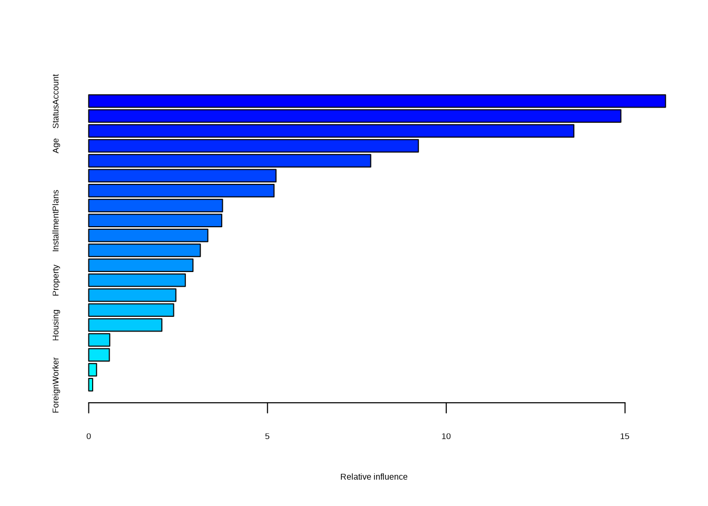
#> var rel.inf
#> StatusAccount StatusAccount 16.1322116
#> CreditAmount CreditAmount 14.8832384
#> DurationMonth DurationMonth 13.5681922
#> Age Age 9.2205182
#> EmploymentSince EmploymentSince 7.8868283
#> Purpose Purpose 5.2379561
#> CreditHistory CreditHistory 5.1830782
#> InstallmentRate InstallmentRate 3.7427905
#> InstallmentPlans InstallmentPlans 3.7201558
#> SavingsAccount SavingsAccount 3.3310716
#> Guarantors Guarantors 3.1216665
#> StatusAndSex StatusAndSex 2.9160491
#> Property Property 2.7019140
#> ResidenceSince ResidenceSince 2.4379173
#> Job Job 2.3755654
#> Housing Housing 2.0459670
#> NCredits NCredits 0.5883543
#> Phone Phone 0.5773367
#> NPeopleMain NPeopleMain 0.2193557
#> ForeignWorker ForeignWorker 0.1098330summary() が示す相対的影響度 (relative influence) は, 各変数による分割が, 各木の当てはめ (損失関数の負の勾配に対する回帰木の当てはめ) における二乗誤差の改善にどれだけ寄与したかを, 全ての木について合計し, 合計が100になるように基準化したものである.
上位の変数 (StatusAccount, CreditAmount, DurationMonth, Age, …) は, ランダムフォレストの重要度の上位とおおむね共通している.
ただし, 分割による改善量に基づく点は不純度ベースの重要度と同様であり, 値の種類が多い変数が上位に来やすい傾向にも注意が必要である.
- partial dependence plot (PDP)
PDPは, (自分以外の変数について平均をとって除去することで) 1変数の反応変数に対する効果を可視化する, XAI (Explainable AI) の一手法である. 縦軸は, 対数オッズ (bad である確率のロジット) のスケールで表示される.
ここでは, 重要な2変数であるAge, CreditAmountについて PDPを作成する.
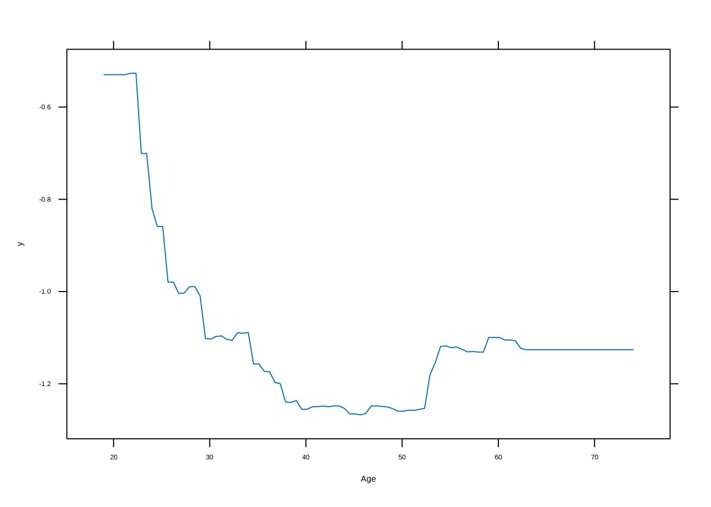
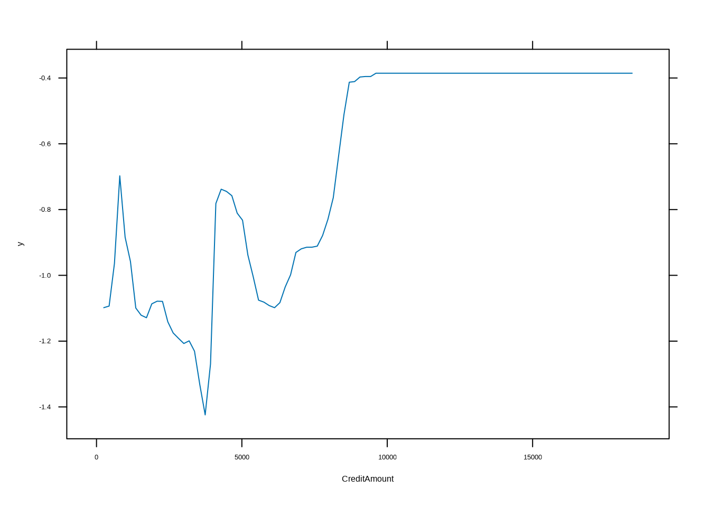
自主課題 他の変数についても, PDPを作図してみよう
- テストデータにより外挿予測
predict()において引数type = "response"を指定すると,
先のgbm()実行時にdistribution = "bernoulli"と指定していた場合には, 確率が返される.
そこで, これを目的変数 ({0,1}) の予測に変換するために, 閾値を設定し大小での2値分類を行う.
また, predict()では, 予測に用いる木の数をn.treesで指定する.
yprob_gbm <- predict(fit_gbm, newdata = credit_df_01[-train, ], n.trees = 5000, type = "response")
# type = 'response': 'bernoulli'では, 確率を返す → 閾値を指定: 確率 → 2値 (0/1)
# 予測
thrshld <- 0.5
yhat_gbm <- ifelse(yprob_gbm > thrshld, 1, 0)
y_test <- credit_df_01[-train, "Customer2"] # 0/1上と同様に, 混同行列を作成し, accuracyや, F1 の数値を取り出す.
表の水準は 0, 1 の順に並ぶため, F1 を bad (= 1) について計算するには positive = "1" を指定する.
(tbl_gbm <- table(yhat_gbm, y_test))
#> y_test
#> yhat_gbm 0 1
#> 0 129 35
#> 1 13 18
(confusionMatrix(tbl_gbm)$overall["Accuracy"])
#> Accuracy
#> 0.7538462
(confusionMatrix(tbl_gbm, positive = "1", mode = "prec_recall")$byClass["F1"])
#> F1
#> 0.4285714→ shrinkage, interaction.depth等のパラメータ・チューニングにより, パフォーマンスを改善できる余地が有る.
自主課題 ハイパーパラメータを変えて, パフォーマンスを比較してみよう.
- ROC曲線, AUC指標
pred_gbm <- prediction(yprob_gbm, y_test)
perf_gbm <- performance(pred_gbm, "tpr", "fpr")
plot(perf_gbm)
abline(0, 1, lty = 2)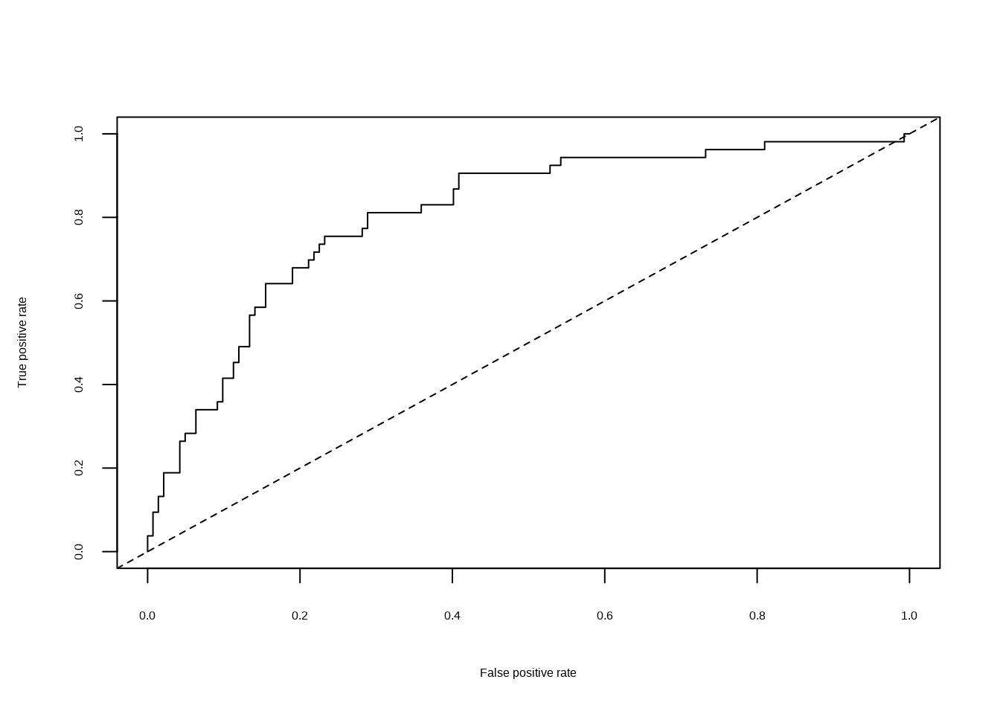
自主課題 0/1予測の閾値を変えて, パフォーマンスを比較してみよう. 不良顧客の見逃し (偽陰性) を減らしたい場合, 閾値は上げるべきか, 下げるべきか?
自主課題 bad/goodの符号化 (0/1) の際, 0/1を入れ替えるとどうなるか試してみよう
注) 上述の手法と合わせるために, 予め学習データとテストデータを分割 (固定) したが, gbmパッケージ内で, 分割→テストする機能 (引数 train.fraction, cv.folds) も有る.
注) 目的変数が3水準以上の因子の場合, gbm()は (distribution = "multinomial"で) 実行できるが,
計算結果は保証されない (警告メッセージも表示される) ため, 使用しないこと.
そのようなケースでは, パッケージxgboostの関数xgboost()や, lightgbmのlightgbm()を
用いることが推奨される.